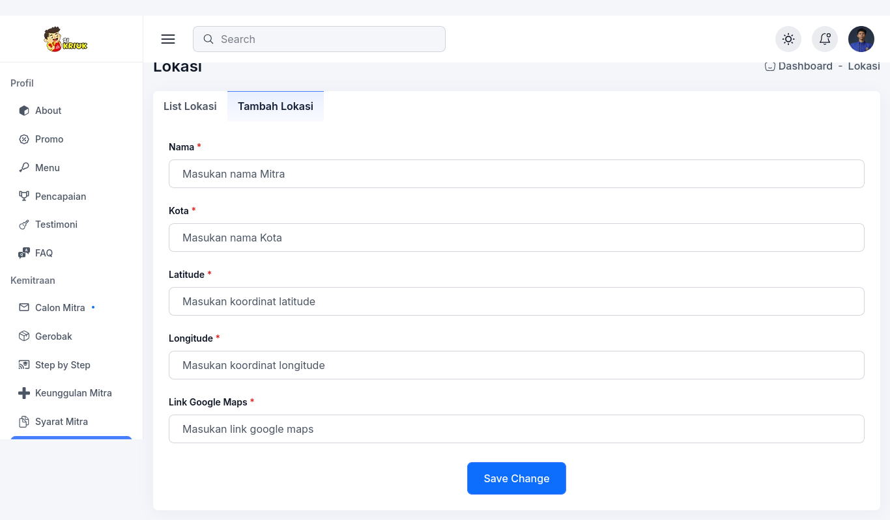

Lokasi Mitra
Menu Lokasi Mitra berfungsi untuk mencatat dan menampilkan lokasi para mitra yang telah bergabung. Informasi ini bisa ditampilkan di frontend untuk memudahkan calon konsumen atau mitra mengetahui titik lokasi kemitraan yang sudah aktif.
Menambahkan Lokasi Mitra
Untuk menambahkan lokasi mitra, ikuti langkah-langkah berikut:

- Buka tab Calon Mitra di menu sidebar.
- Pilih sub-tab Tambah Lokasi.
- Isi Nama mitra (nama pemilik atau nama outlet).
- Isi Kota tempat lokasi mitra berada.
-
Masukkan koordinat Latitude dan Longitude sesuai titik lokasi di peta.
Cara melihat Latitude & Longitude dari Google Maps:- Buka Google Maps.
- Cari lokasi mitra yang ingin ditambahkan.
- Klik kanan pada titik lokasi mitra, lalu pilih "Ada apa di sini?" atau "What's here?".
- Di bagian bawah akan muncul angka koordinat seperti
-6.1807299, 107.0083363. - Salin angka tersebut ke form Latitude dan Longitude.
- Masukkan Link Google Maps untuk navigasi langsung.
- Klik tombol Save Change untuk menyimpan lokasi.
Tampilan Lokasi
Lokasi mitra yang sudah tersimpan dapat digunakan untuk ditampilkan dalam peta interaktif dihalaman utama, menu, dan lokasi.